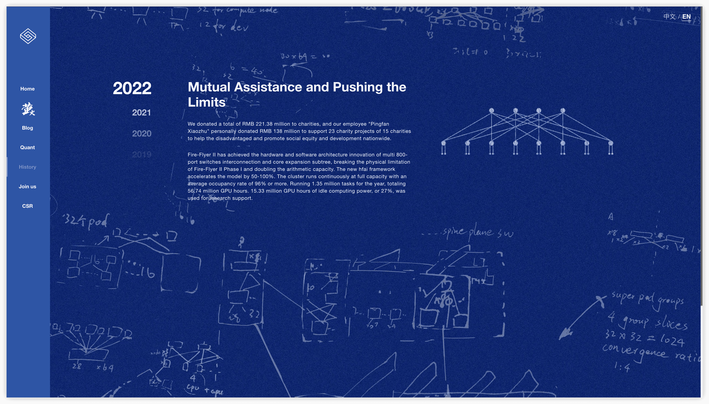
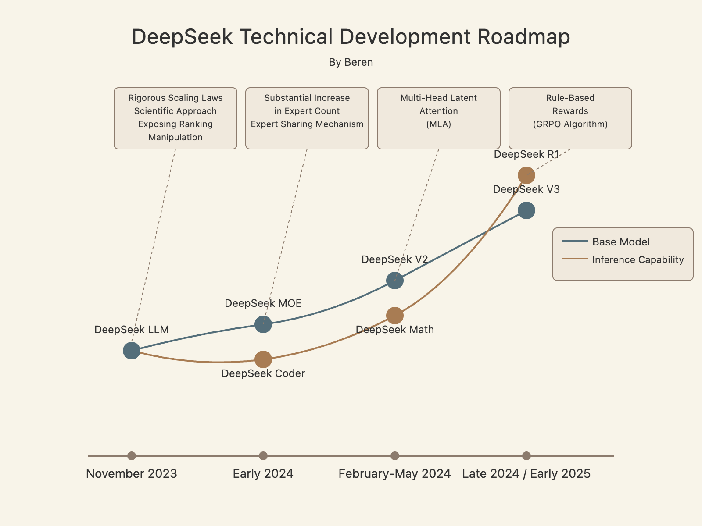
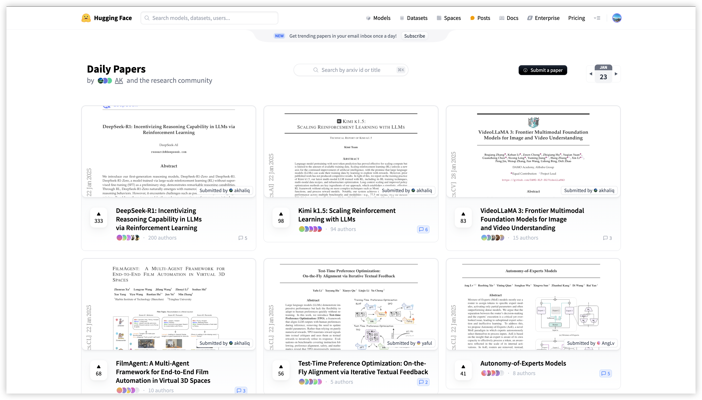
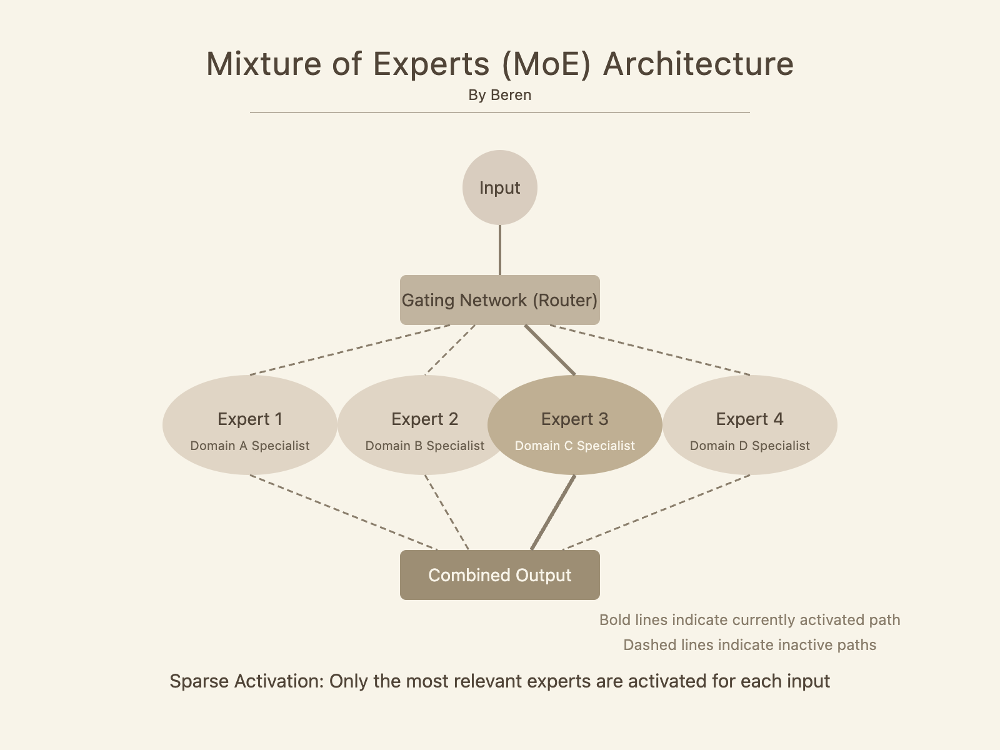
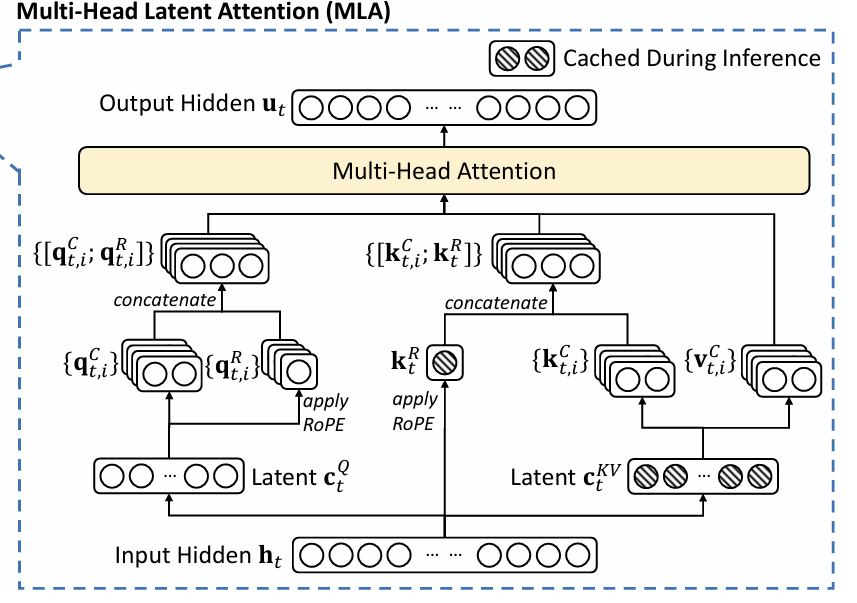
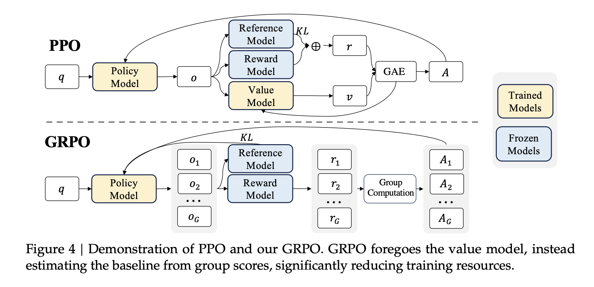
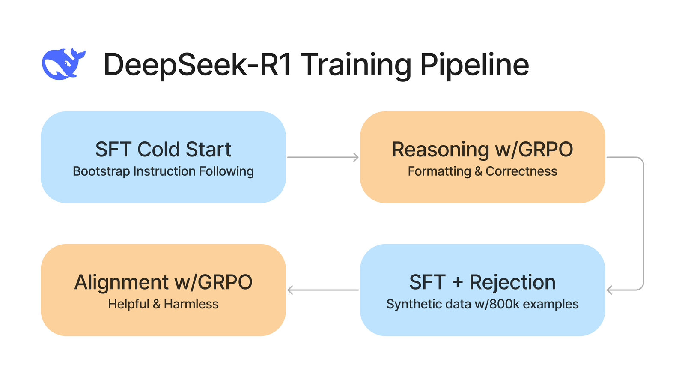
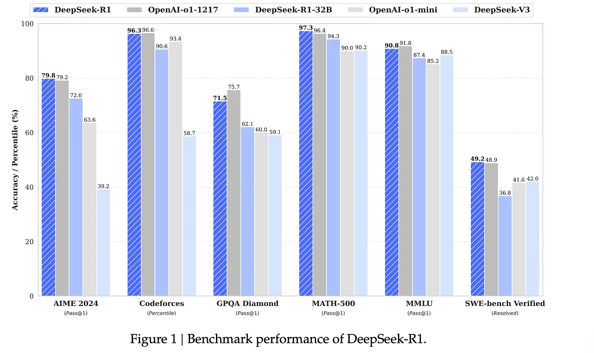
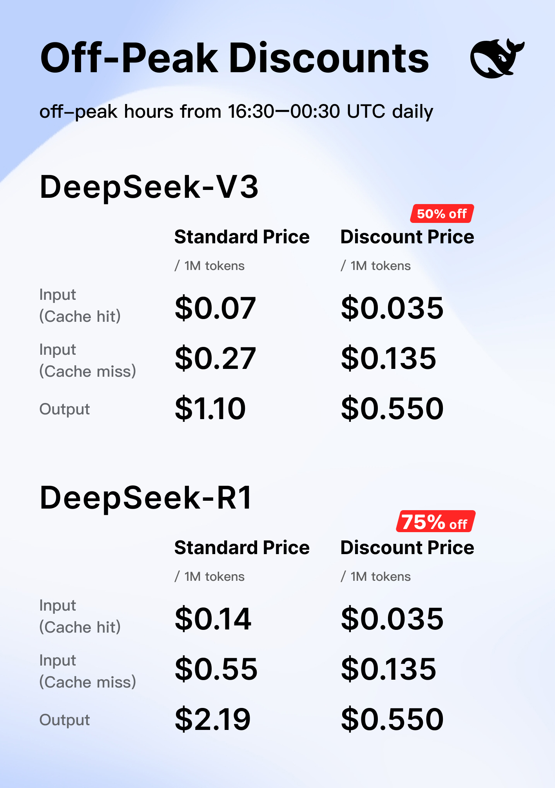
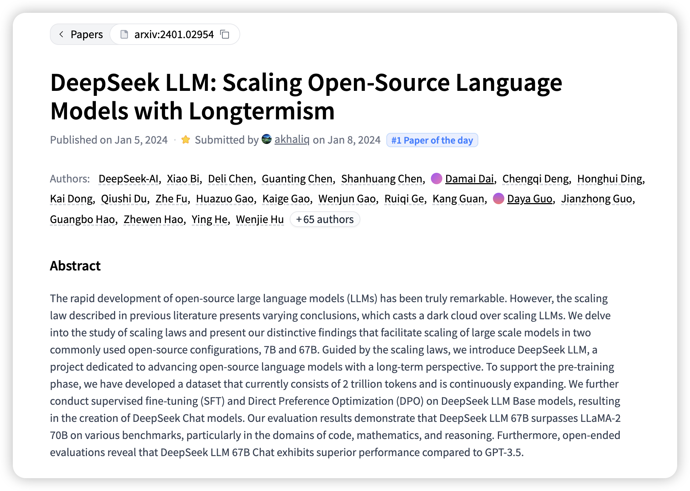

World's changing fast and everyone can feel the sense of this acceleration. Since the very initial launch of ChatGPT (3.5 series), I've been closely following the evolution of large language models over the past two years. Players come and go, but the models are always evolving, and it seems there's already a mature and feasible path to AGI.
Not following expected paths similar to other well-established AI giants in the field, DeepSeek has quietly risen from relative obscurity to become one of the most technically impressive players. Having witnessed the flash of waves and whales these days, I have a few thoughts and reflections on DeepSeek's engineering approach and how it managed to compete with giants like OpenAI and Anthropic despite having significantly fewer resources.
What particularly caught my attention in the first place about DeepSeek isn't just their model results but their distinctive development philosophy. While many companies have pursued essentially similar approaches—scaling up transformer models with minor tweaks, DeepSeek has consistently made bold architectural choices that challenge conventional wisdom.
Quantitative Finance DNA

DeepSeek's journey begins with an investment firm called "Huan Fang" (幻方). In 2022, before the term "AI boom" became ubiquitous, Huan Fang had already secured approximately 5,000 A100 GPUs. Most intriguingly, they initially used this computing power not for proprietary models but for an academic computing cluster called "Ying Huo" (萤火), which they made freely available to university researchers during free time.
Having used and experimented with various cloud computing platforms, I found this level of infrastructure sophistication remarkable for a relatively small company. The cluster wasn't merely a collection of GPUs but a fully-developed supercomputing system with custom scheduling software and efficient resource allocation mechanisms. This early engineering excellence foreshadowed DeepSeek's later approach to AI development.
In early 2023, as language models began demonstrating unprecedented capabilities, Huan Fang spun off DeepSeek as a separate entity focused on AI research. This timing meant DeepSeek was entering an already crowded field, with numerous companies in China and globally having established language model programs. The late entry made their subsequent achievements all the more impressive.
What stands out about DeepSeek's approach from day one was their commitment to academic purity and openness. When they released their first model (DeepSeek LLM) in November 2023, they published comprehensive technical details and made the model open source. While this might seem commonplace now, at the time many companies were closely guarding their techniques. This transparency allowed the broader research community to learn from and build upon their work, and that is the very essence of open-source spirits.
Dual Evolution Path

After examining DeepSeek's papers and releases, I've identified two parallel technological tracks that define their development approach: foundation model architecture innovation and domain-specific reasoning enhancement. This dual focus allowed them to make progress on both general capabilities and specialized tasks simultaneously, a smart choice.
On the foundation model track, their evolution progressed through four major iterations:
DeepSeek LLM (November 2023) marked their entrance into the field with a model that refined the architecture pioneered by Meta's LLaMA. While it didn't represent a radical departure, it contained several interesting improvements. Most notably, they conducted a meticulous analysis of scaling laws, examining how model performance relates to computing resources. They discovered that previous scaling laws had overlooked certain overhead factors, leading to inaccurate predictions. Their refined formula allowed more precise planning of resource allocation.
DeepSeek MoE (January 2024) marked their transition to Mixture-of-Experts architecture. While MoE wasn't new, DeepSeek's implementation took a radically different approach. Unlike typical MoE models that used 8-16 experts (Mistral 8×7B), DeepSeek employed 64 experts and later increased this to over 100. They also introduced a dual-layer structure with a small number of "shared experts" handling general capabilities and numerous "specialized experts" for specific domains.
DeepSeek V2 (May 2024) brought their most significant architectural innovation: Multi-head Latent Attention (MLA). This technique drastically reduced memory requirements by compressing attention keys and values into a low-dimensional latent space. The practical impact was enormous—reducing KV cache by 93% and increasing inference speed by nearly 6x while maintaining comparable performance.
DeepSeek V3 (December 2024) scaled their architecture to 671B parameters. However, due to their MoE design, only about 30B parameters were activated for any given input, making inference costs comparable to much smaller models. This version also introduced multi-token prediction (MTP) during training, allowing the model to predict several tokens at once, which further enhanced reasoning capabilities and inference speed.
In parallel, They also developed specialized models focusing on reasoning capabilities:
DeepSeek Coder established their presence in the coding domain, with versions evolving from a standard decoder-only architecture to eventually adopting the MoE approach from their foundation models.
DeepSeek Math introduced innovative techniques for mathematical reasoning, including approaches for automatically creating process supervision signals without human labeling. This allowed the model to learn not just whether an answer was correct, but whether each step in the reasoning process was valid. Another milestone innovation point, Group Relative Policy Optimization (GRPO), a variant of Proximal Policy Optimization (PPO), is introduced for the first time, with the aim to enhance mathematical reasoning abilities while concurrently optimizing the memory usage of PPO.
DeepSeek Prover extended mathematical capabilities to formal theorem proving, incorporating external verification tools to validate mathematical statements.
DeepSeek R1, their most recent breakthrough, applied a radically simplified reinforcement learning approach that skipped the standard supervised fine-tuning stage entirely, instead directly fine-tuning the base model with rule-based rewards. This "Zero-RL" approach contributed to R1's exceptional reasoning capabilities.
Obiviously, these two tracks combined together has created a positively development cycle: innovations in the foundation architecture enhanced the specialized models, while lessons from domain-specific reasoning fed back into the base architecture. This bidirectional flow of improvements accelerated DeepSeek's progress relative to competitors following more linear development paths.

Core Technical Innovations
Diving deeper into DeepSeek's technical innovations reveals a consistent pattern: they often chose counterintuitive approaches that prioritized efficiency over conventional wisdom. So far, three innovations stand out as particularly significant:
Mixture of (loads of) Experts

Source: A Visual Guide to Mixture of Experts
When most companies implemented MoE architectures, they followed established patterns using a modest number of experts (typically 8-16). DeepSeek took the road less traveled, dramatically increasing the number of experts to 64 in initial experiments and later to 160-256 in production models.
Why does this matter? Traditional MoE designs with fewer experts often struggle with what researchers call "expert collapse", the case when multiple experts learning similar functions rather than truly specializing. By increasing the number of experts substantially, DeepSeek ensured each expert could develop highly specialized capabilities.
Additionally, they introduced a structural innovation with "shared experts" that every input would pass through, complemented by numerous "specialized experts" activated selectively. This approach resembles how real-world organizations handle specialized knowledge: general practitioners who handle common cases and specialists who address specific domains.
The impact of this design choice became evident in performance metrics. With a 236B parameter model, DeepSeek V2 achieved state-of-the-art results while only activating about 21B parameters for any given input—a nearly 90% reduction in computational requirements. Such efficiency translated directly to lower deployment costs and faster inference.
Multi-head Latent Attention (MLA)

Source: Towards Data Science
DeepSeek's most technically elegant innovation addresses a fundamental challenge in transformer models: the memory requirements for attention mechanisms. During inference, models need to store key-value pairs for every token in the context window, creating substantial memory overhead that limits practical deployment.
Previous approaches like Grouped-Query Attention (GQA) addressed this by forcing multiple attention heads to share the same keys and values. DeepSeek took a different approach with MLA, projecting the high-dimensional key-value space into a much lower-dimensional "latent" space.
Let me illustrate this with a simplified explanation:
Traditional attention:
- Each token stores a full key and value vector of dimension d for each of h heads
- Memory usage: O(sequence_length × d × h))
MLA:
- Each token stores a single latent vector of dimension d_latent (much smaller than d×h)
- When needed, this latent vector is projected back to full dimension
- Memory usage: O(sequence_length × d_latent)This reduced memory requirements by 93% while maintaining comparable performance. Perhaps more surprisingly, DeepSeek found that MLA could match the performance of GQA with far fewer groups, effectively getting better results with even less computation.
This innovation directly enabled their models to handle longer contexts and process information faster, with generation speed increasing by 5.76× compared to their previous models. Perfect example of how strategically rethinking fundamental architectural assumptions can lead to dramatic efficiency improvements.
GRPO: Group Relative Policy Optimization

The third major innovation came in reinforcement learning, an area that has traditionally been complex and resource-intensive. Most approaches since OpenAI's initial RLHF work have used reward models trained on human preferences to guide model behavior. These systems typically involve:
- A policy model (the language model being trained)
- A reward model to evaluate outputs
- A reference model to prevent divergence
- A value model to estimate expected rewards
DeepSeek observed that this complexity created significant overhead. In their Math model paper, they introduced a simplified approach called GRPO (Group Relative Policy Optimization). The key insight was eliminating the value network entirely and using direct reward averaging across multiple samples instead.
This simplification reduced memory requirements during training and made the process more stable. In DeepSeek R1, they took this simplification further by replacing neural reward models with rule-based rewards wherever possible. For tasks like mathematics and coding, they used direct verification of answers or test cases rather than learned reward functions.
Perhaps most surprisingly, DeepSeek R1 demonstrated that models could develop complex reasoning capabilities without the standard supervised fine-tuning stage that most companies consider essential. Their "Zero-RL" approach applied reinforcement learning directly to a pretrained model without intermediate supervised fine-tuning, challenging the conventional training pipeline.

Source: Why GRPO is important and how it works
Engineering Excellence and Cost Efficiency

Beyond their architectural innovations, DeepSeek's engineering practices deserve special attention. Their training infrastructure and methodology reveal a company obsessed with extracting maximum value from very limited resources.
The most well-known example is DeepSeek V3, which they trained for approximately $5.57 million using 2,048 H800 GPUs. For context, comparable models from other organizations reportedly cost tens or even hundreds of millions to train. How did they achieve such efficiency?
| Technique | Traditional Approach | DeepSeek Innovation | Impact |
|---|---|---|---|
| Mixed Precision Training | FP16 or BF16 throughout | FP8 for most operations | ~2× memory efficiency |
| Expert Balancing | Simple routing with load imbalance | Loss-free expert balancing | Higher GPU utilization |
| Communication Optimization | Standard all-to-all patterns | Optimized expert-to-device mapping | Reduced network overhead |
| Training Stability | Frequent restarts and checkpoints | Single clean training run | Less wasted computation |
I find their use of FP8 precision particularly noteworthy. While many researchers considered lower precision to be too risky for large-scale training, DeepSeek carefully analyzed which operations could be safely performed in reduced precision without affecting model quality. This wasn't simply a matter of switching a flag, as it required detailed understanding of numerical stability throughout the network and selective precision preservation for critical operations.
Their expert balancing approach also deserves mention. In MoE models, one significant challenge is ensuring all experts and devices are utilized efficiently. If certain experts or GPUs are consistently overloaded while others remain underutilized, training efficiency suffers dramatically. DeepSeek developed a dynamic load-balancing mechanism that adjusted routing probabilities during training to maintain optimal utilization.
Perhaps most impressively, DeepSeek V3 reportedly completed training in a single run without restarts or major adjustments. Anyone who has trained large models knows how rare this is, since training runs typically encounter numerous issues requiring restarts, hyperparameter adjustments, or other interventions that consume additional resources. Applause goes to their engineering and infrastruture team behind the scenes.
This efficiency focus has practical implications beyond training. Their V2 and V3 models could be deployed at significantly lower cost than competitors, allowing them to offer commercial API access at very competitive rates. According to reports, they were able to profitably offer inference at prices that undercut most competitors while maintaining quality. Interestingly, it is reported that due to this unreal pricing strategy, other providers had been forced to lower their own prices in response.

Research Culture and Technical Philosophy
One aspect of DeepSeek that fascinated me while researching their papers was their distinctive research culture. Unlike many companies that publish papers primarily to build prestige or recruit talent, their publications reveal a genuine scientific ethos.
A telling example appears in their first paper on DeepSeek LLM. They included a detailed analysis of benchmark gaming—the practice of optimizing models specifically for evaluation metrics rather than real-world performance. Not only did they explain how benchmarks could be gamed, but they quantified exactly how much their scores would improve if they employed such techniques (a potential 20+ point boost on Chinese benchmarks). Then, remarkably, they chose to report their unmodified scores instead of the inflated ones. This level of transparency is virtually unheard of in commercial AI development, where benchmark scores drive funding and attention. Later evaluations confirmed that DeepSeek's models indeed showed less evidence of benchmark optimization than many competitors, demonstrating that this wasn't merely talk but a consistent principle.
They're also very open to explore negative results. In their DeepSeek Math paper, they devoted a significant section to analyzing why certain reinforcement learning approaches didn't work as expected. They showed that while RL improved accuracy on test sets, it didn't necessarily enhance the model's fundamental problem-solving abilities, but mostly reordered existing capabilities to prioritize correct solutions.
This honesty about limitations again defies industry norms, where companies typically publicize only positive outcomes. By honestly assessing where their approaches fell short, DeepSeek demonstrated a commitment to scientific progress over marketing narrative.
Their technical philosophy also embraces a healthy skepticism toward established practices. When most companies were following OpenAI's lead by training reward models on human feedback, DeepSeek explored alternative approaches. When conventional wisdom held that large models required extensive supervised fine-tuning before reinforcement learning, DeepSeek questioned this assumption and found it unnecessary in many cases.
Lessons Learned
What can the broader technical community learn from DeepSeek's approach? I see several transferable insights:
Efficiency through simplification rather than elaboration. It seems DeepSeek consistently found ways to remove complexity: whether eliminating value networks from RL, reducing precision requirements, or streamlining training pipelines. This challenges the tendency in research to add complexity rather than subtract it. In many domains beyond AI, there's value in asking: "What can we remove while preserving functionality?"——reminding me of the very first day when I was taught "Occam's Razor" in class at school.
Engineering excellence as competitive advantage. While much attention goes to theoretical breakthroughs, DeepSeek's story highlights how implementation details and operational excellence can create substantial advantages. Their ability to train models for a fraction of the cost didn't come from a single insight but from numerous optimizations throughout their stack. New era calls for more talents who combines the best of algorithimic thinking and infrastructure engineering, and the latter ability is particularly rare in the current market.
Questioning established practices in basement setup. DeepSeek's willingness to try approaches that conflicted with conventional wisdom, such as their massive increase in expert count for MoE models, led to some of their most significant advances. Well, maintaining healthy skepticism toward "best practices," especially in rapidly evolving fields, is perhaps a very foundational thing human can perform in a time when we're more than close to witness AGI in our lifetime.
Long-term thinking over quick wins. Despite operating in a competitive environment, DeepSeek invested in foundational research and engineering capabilities rather than rushing to match competitors feature for feature. This patience enabled them to develop distinctive capabilities rather than merely imitating others.
Looking ahead, there are several directions where DeepSeek's approach might grow further:
1. Their breakthroughs in efficiency suggest that AI capabilities might advance more through architectural and engineering innovations than through raw scale. If DeepSeek can achieve with billions what others require trillions to match, it implies that we're far from optimal in how we design and train these systems.
2. Their Zero-RL success suggests that the division between pretraining and fine-tuning might be more fluid than previously thought. Perhaps models can develop sophisticated capabilities through properly designed reinforcement signals without the intermediate supervised stage, thus potentially simplifying training pipelines further.
3. Their multi-token prediction work improves generation speed by optimizing model training efficiency or reducing the number of inference iterations, enabling substantially faster responses from AI systems. This efforts in improving generation speed reminds me of another potential acceleration direction: the text generation method based on diffusion model (e.g., Diffusion-LLM). Having said that, it still needs to rely on Transformer to process discrete tokens, and the generation speed and quality have not yet surpassed the autoregressive model. If there exists a diffusion LLM that is completely independent of Transformer (well it's hard), further verification of technical details and performance metrics is needed. Today however, I heard that the very latest diffussion-based LLM by Inception Labs (Mercury) came out, which is not so transformer dependent, and the demo shows it's indeed quite fast, things get more and more excited!
As AI continues to evolve, companies and researchers would do well to ask themselves: Are we challenging assumptions or simply following them? Are we adding complexity where simplification might work better? Are we optimizing for benchmarks or for genuine capability? DeepSeek's approach suggests that these questions can lead to breakthrough directions that advance the field in unexpected ways.

While I was sitting here composing this post, I heard that DeepSeek is launching their open-source week repos on GitHub. I'm excited to see what they'll be building next, and probably bring you another post after I digested their practices.
Thanks for reading. Stay tuned and long live the open-source community!
Further Reading
DeepSeek Official Resources
Visual Resources & Tutorials
- A Visual Guide to Mixture of Experts
- DeepSeek V3 Explained: Multi-head Latent Attention
- Why GRPO is Important and How It Works
Research Papers
- DeepSeek LLM: Scaling Open-Source Language Models with Longtermism
- DeepSeekMoE: Towards Ultimate Expert Specialization in Mixture-of-Experts Language Models
- DeepSeek-Coder: When the Large Language Model Meets Programming
- DeepSeekMath: Pushing the Limits of Mathematical Reasoning in Open Language Models
- DeepSeek-V2: A Strong, Economical, and Efficient Mixture-of-Experts Language Model
- DeepSeek-Prover: Advancing Theorem Proving in LLMs through Large-Scale Synthetic Data
- DeepSeek-Coder-V2: Breaking the Barrier of Closed-Source Models in Code Intelligence
- DeepSeek-Prover-V1.5: Harnessing Proof Assistant Feedback for Reinforcement Learning and Monte-Carlo Tree Search
- Let the Expert Stick to His Last: Expert-Specialized Fine-Tuning for Sparse Architectural Large Language Models
- DeepSeek-V3 Technical Report
- DeepSeek-R1: Incentivizing Reasoning Capability in LLMs via Reinforcement Learning
Explainers and Analysis
- IBM - DeepSeek's reasoning AI shows power of small models, efficiently trained
- Group Relative Policy Optimization (GRPO) - Formula and Code
- Mixtral of Experts (Paper Explained)
- DeepSeek R1 Explained to your grandma
- DeepSeek R1 Theory Overview | GRPO + RL + SFT
- Mercury by Inception Labs (Referenced in this post for non-transformer-based LLM approaches)
Found this interesting? Feel free to reach out to me to discuss further technical aspects in the field of GenAI, LLM, cycling, coffee, and many more. Cheers!